COMP 2406 - Fall 2017 Tutorial #8
Persistent Data with MongoDB and Node.js
© L.D. Nel 2017
Revisions -none yet
Description:
The purpose of this tutorial is to get you started with using a MongoDB database to store JSON data and to access it from a Node.js application.
IMPORTANT: This tutorial is meant as a homework assignment and for you to demonstrate your results at your tutorial session. You will not be able to complete it if you only start when you come to the tutorial. You will need to read about and learn those aspects of javascript that pertain to this tutorial on your own and come up with a strategy to solve the problems.
To get credit for the tutorial you must complete, or make significant progress on, the exercise problems provided and demonstrate your results to the tutorial TA before you leave the tutorial.
Instructions:
MongoDB
MongoDB is the most popular JSON store used with Node.js and many other applications. By JSON store we mean it stores data formated as JSON (Javascript Object Notation) documents. MongoDB is available for several operating systems including Windows, Mac OSX, and Linux. Here I describe installing mongo on my Windows 10 machines. Things will vary for different platforms. The linux couse image should have mongo installed already. Go through whatever installation is necessary on your own machine before proceeding with the tutorial exercises.
Problem 1) Setting Up MongoDB and Accessing It
MongoDB provides several components including: the MongoDB server and a command line client shell to access it. Here we will set up and start the server and then connect to it with a mongo shell client. Later we will access it with a Node.js application.
To do this tutorial you need MongoDB installed on your computer. You can download the community edition database for the various platforms here: https://www.mongodb.com/download-center#community
See the documentation supplied by mongodb.com at: https://docs.mongodb.com/manual/
Installation instructions are in the tutorials tab, in particular for Windows, follow the instructions here https://docs.mongodb.com/manual/tutorial/install-mongodb-on-windows/. If you are using a Mac here is another useful install site (https://treehouse.github.io/installation-guides/mac/mongo-mac.html)
Here is my screen capture for downloading mongodb for my window's 10 computer. We will be using mongodb version 3.4 in this tutorial.
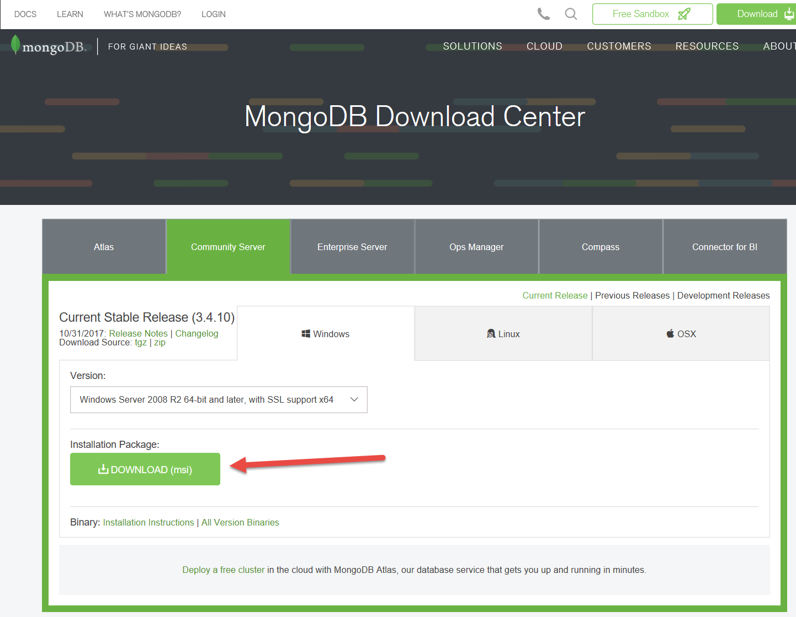
(Is is possible to also download binary versions that can be unzipped instead of the .msi installer version. I just did the .msi installer.)
My install directory looked like the following. We will be using the mongod.exe which runs the database server itself and mongo.exe which is a command-line client that can connect to the server.
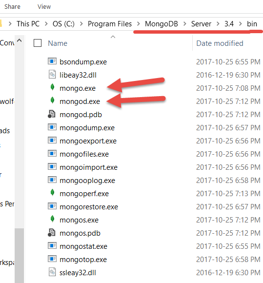
Mongo requires a /data/db directory to hold its data. By default it will expect it to be at the root level of the same drive that mongodb is installed on. In my case: c:\data\db. When you run mongod.exe however you can specify a different data directory using the -dbpath command line option as you will see below.
To verify the installation open a command line prompt window in the same directory where mongodb executables are located and run:
mongod --version
mongo --version
My version output looked as follows:
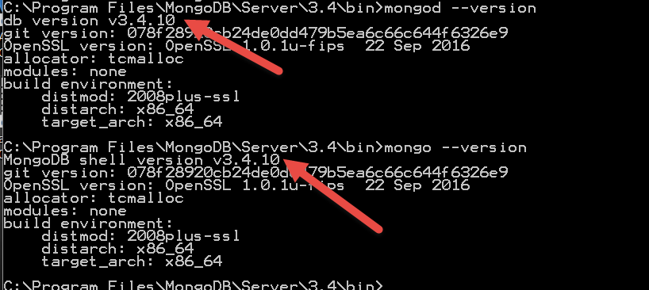
Start up the server using a command similar to (make sure the data\db folder exists beforehand):
C:\Program Files\MongoDB\Server\3.4\bin>mongod.exe -dbpath c:\data\db
My start up screen looked as follows:
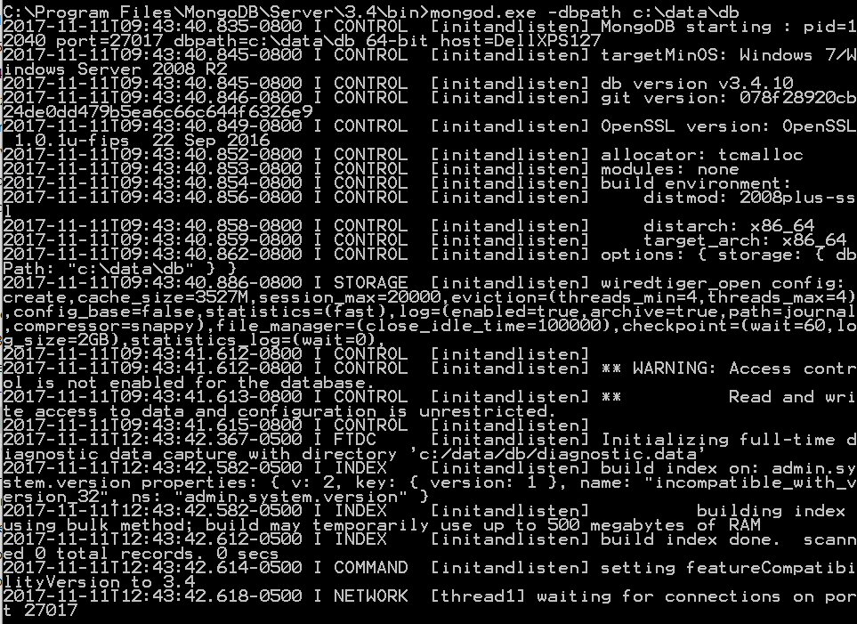
You should notice a bunch of files in your /data/db directory after the server launches. The server is now running. The startup output indicates that the server is listening for connections on port 27017. This is its default port.
You can also start up by specifying a different port and location of a data directory as follows:
c:\mongodb\bin\mongod.exe -port 27999 -dbpath mydir/data/db
(If you don't specify your own data/db data path mongodb will expect to use c:\data\db as a default.)
(To shut down the server you can use cntl-C in its command window.)
Next we will open a mongo command line shell client to connect to the database.
Open a new command line window. (IMPORTANT: open a new CMD window, don't try and use the one that was used to start the server -it won't work because the server has that occupied) Start the mongo command line client by executing:
C:\Program Files\MongoDB\Server\3.4\bin>mongo.exe
The result should look like the following:
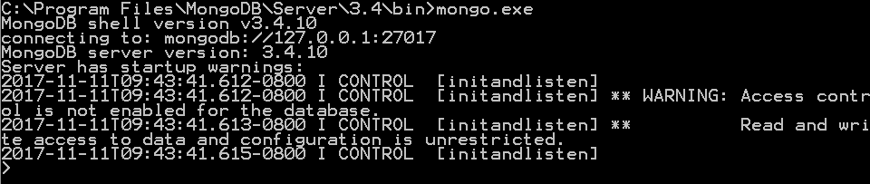
By default mongo connects to a database server running on localhost:27017. (You can connect to a different host/port with mongo.exe with --host, --port options but we will not do so here.)
To get a list of available commands in the shell execute help in the client shell. Do this to familiarlize yourself with some of the available commands. Also see the mongo shell methods at: http://docs.mongodb.org/manual/reference/method/
We are now ready to go on and add some data to a database.
Note about users: Mongo, like most databases, allow you to set up users with different access priviledges. However if you have not set up users then connecting to the database from localhost will allow you to see everything, which is what we are doing here. So don't set up users, because once you do you need to log in as a specific user.
Problem 2)
Here we assume you have a mongodb server running and command line client open from the previous problem.
To create and use a new database called "dbSongs" execute
use dbSongs
in the client command shell.
Next to see the current database in use execute:
db
It should show:
dbSongs
(Note if you also execute show dbs you will not yet see your dbSongs database yet because nothing has been added to it. Mongodb will only create the actual database once some data has been added to it.)
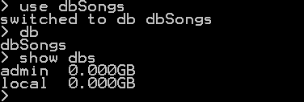
Next we will create some song objects to put in the database. The mongo command line client is a full javascript interpretation environment, just like the node.js command shell. So you can create JSON objects using javascript and then add them to the database.
Create two song objects in the command shell by executing the javascript:
var song1 = {title: "All The Things You Are", composer: "Jerome Kern"}
var song2 = {title: "The Girl From Ipanema", composer: "Antonio-Carlos Jobim"}
Mongodb stores JSON objects as documents in collections. (It actually stores BSON data which is a binary version of JSON objects.) To create a collection called "Songs" to store individual song documents execute:
db.getCollection("Songs")
This will create the collection "Songs" if it does not yet exist or simply get the collection if it already exists.
(To completely remove the collection "Songs" execute: db.Songs.drop())
Now insert data into the Songs collection of your dbSongs database by executing:
db.Songs.insert(song1)
db.Songs.insert(song2)
To see the collections in the database execute:
show collections
and you should see:
Songs
To see all the songs in your current database we can execute a find() without specifying parameters:
db.Songs.find()
Here is a screen capture showing all the above operations:
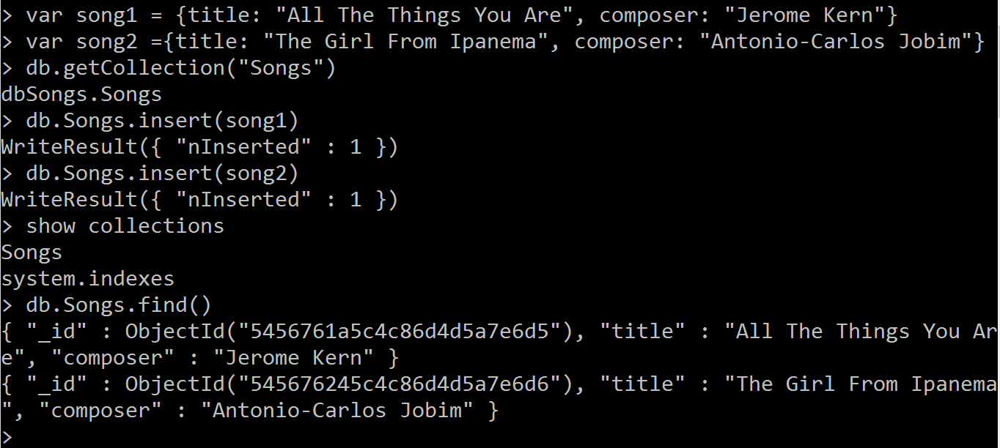
Notice song objects (or more correctly documents) have an "_id" field. This is created by mongodb as a unique identifier or key.
By the way if you do: db.Songs.find().pretty() it will format the output nicer.
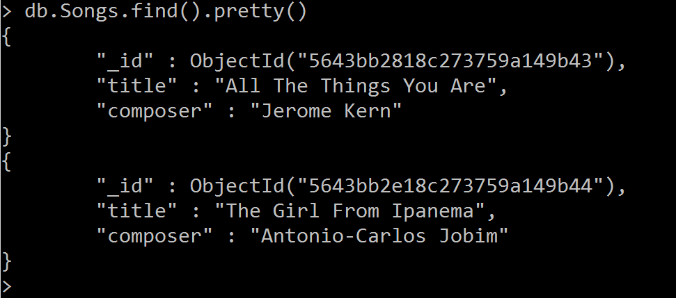
To find a song with the title "The Girl From Ipanema" execute:
db.Songs.find({title: "The Girl From Ipanema"})
On the other hand, to find any song whose title has "Things" as a substring you can execute
db.Songs.find({title: /Things/})
This last example uses regulars expressions which can be complex and finicky in the mongo command shell.
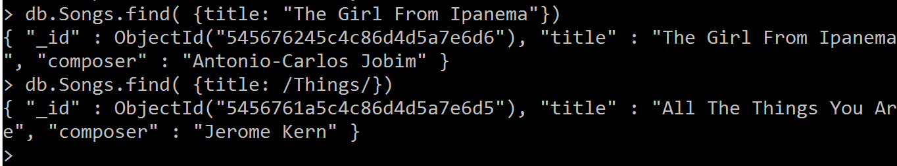
For documentation of using the mongo shell see: https://docs.mongodb.com/manual/mongo/
For example to delete any song titled "Happy Birthday" execute:
db.Songs.deleteMany({title:"Happy Birthday"})
to delete any song whose title contains the substring "Happy" execute:
db.Songs.deleteMany({title:/Happy/})
Problem 3) Accessing MongoDB from Node.js
Here we assume you have the mongodb server running from the previous questions and a Node.js environment set up. We will require a npm mongodb driver module in our node.js app and use it to access the database.
Open a new command line terminal window on the demo_code folder. To access the database from your node application you will need to install the mongodb npm module first. A package.json file is provided that already has the mongodb module dependency included. To install the npm mongodb module execute:
npm install
With mongodb module installed, you should be able to run the node application in: 01_db_access.js (the code looks like the following:)
const MongoClient = require('mongodb').MongoClient
const DB_PATH = 'mongodb://localhost:27017/dbSongs'
MongoClient.connect(DB_PATH, function(err, db){
if(err) console.log(`FAILED TO CONNECTED TO: ${DB_PATH}`);
else{
console.log(`CONNECTED TO: ${DB_PATH}`);
db.collection("Songs", function(err, collection){
var cursor = collection.find();
cursor.each(function(err,document){
console.log(document);
if(document == null) db.close();
});
});
}
});
When this is run it should log to the console the documents currently in the Songs collection of the dbSongs database:
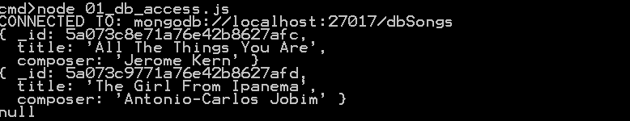
Problem 4) Inserting Data to MongoDB from Node.js
Next run the application 02_db_insert.js that inserts data into the mongo database. The code is as shown below. Each time you run the node app you should see an additional document added. You can now also experiment with removing documents and finding documents based on a criterial of interest. Also you can check the effects your node.js app has on the database by just using the mongo.exe client shell as we did in problem 2.
const MongoClient = require('mongodb').MongoClient;
const DB_PATH = 'mongodb://localhost:27017/dbSongs'
MongoClient.connect(DB_PATH, function(err, db){
if(err) console.log(`FAILED TO CONNECTED TO: ${DB_PATH}`);
else{
console.log(`CONNECTED TO: ${DB_PATH}`);
db.collection("Songs", function(err, collection){
collection.insert({title: "Happy Birthday", composer: "Anonymous"}, function(err, object){
var cursor = collection.find();
cursor.each(function(err,document){
console.log(document);
if(document == null) db.close();
});
});
});
} //else
});
Below is the result of running the 02_db_insert.js once:
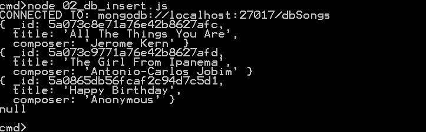
For more examples of using the mongodb npm in module in a node.js application see: https://www.npmjs.com/package/mongodb
Problem 5) Inserting RealBook Song Data into MongoDB Database
Finally, In the demo code we have provided you with a simple node.js application 03_parse_songs.js that currently parses a sample file songs/sample_songs.txt of song data from the iRealPro iPad app and places the resulting JSON objects in a songs/output.txt file. Run this app to get familiar with the code.
Now modify this code so that it writes the individual parsed songs to the mongodb database's Songs collection instead of, or as well as, the output.txt file. That is, replace the code that writes to the output file with code that would connect to and write to the database instead. You should put the individual songs in a "Songs" collection of a mongodb database. After completing this you should see the following content in the mongodb database:
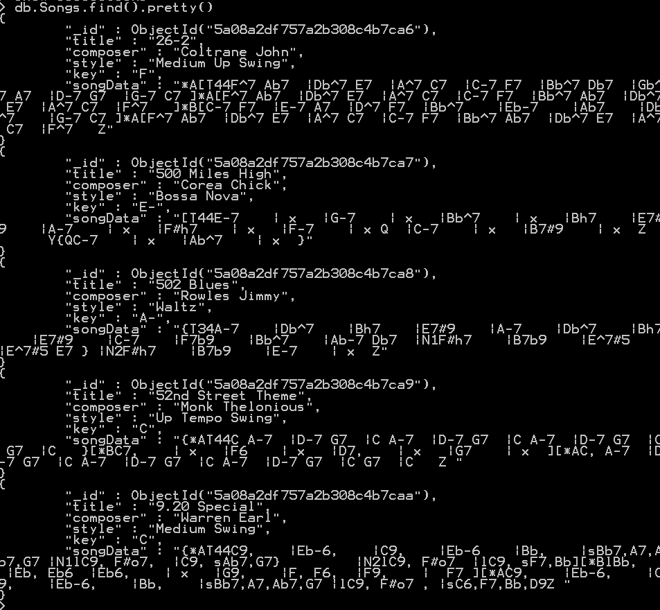
When you have completed these exercises show your results to the TA's to get credit for the tutorial.